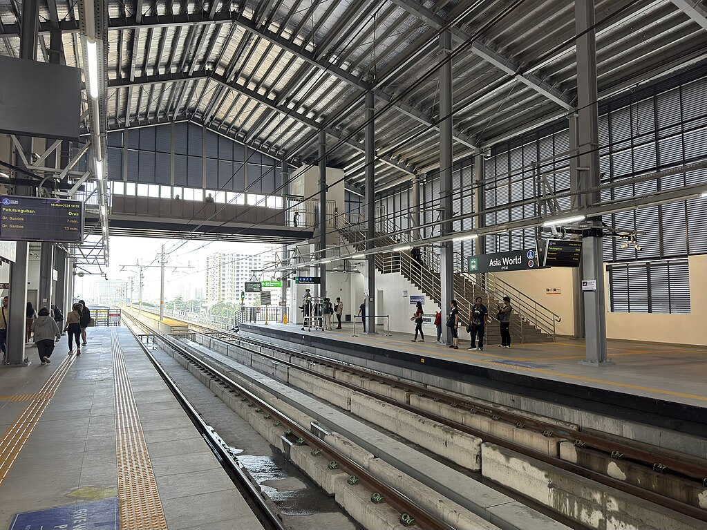

Asia World
(PITX)
LRT-1 station
Asia World station, commonly known as PITX station, is an elevated Light Rail Transit (LRT) station located on the LRT Line 1 (LRT-1) system in Parañaque City. Named after the adjacent Parañaque Integrated Terminal Exchange (PITX), the station is part of the LRT-1 Cavite Extension Project, which was opened to the public on November 16, 2024. It is situated between the Manila–Cavite Expressway (CAVITEX) and Kennedy Road. It is the 3rd station for trains headed to Fernando Poe Jr., the 23rd station for trains headed to Dr. Santos, and is one of the five LRT-1 stations in Parañaque; the others are Redemptorist, MIA, Ninoy Aquino, and Dr. Santos.
| Asia World | |||||||
|---|---|---|---|---|---|---|---|
|

Construction of the station in November 2021
|
|||||||
| General information | |||||||
| Other names | PITX | ||||||
| Location | Besides Parañaque Integrated Terminal Exchange, Kennedy Road, Don Galo, Parañaque, Metro Manila, Philippines | ||||||
| Owned by |
|
||||||
| Operated by | Light Rail Manila Corporation | ||||||
| Line(s) | LRT Line 1 | ||||||
| Platforms | 2 (2 side) | ||||||
| Tracks | 2 | ||||||
| Connections |
|
||||||
| Construction | |||||||
| Structure type | Elevated | ||||||
| Parking | PITX | ||||||
| Bicycle facilities | No | ||||||
| Accessible |
Concourse: All entrances
Platforms: All platforms |
||||||
| Other information | |||||||
| Status | Operational | ||||||
| Station code | AW | ||||||
| History | |||||||
| Opened | November 16, 2024 | ||||||
| Services | |||||||
|
|||||||
Asia World station during the construction in April 2023
The plans for the southern extension project were restarted as early as 2012 during the Benigno Aquino III administration and was expected to begin construction in 2014, but was delayed due to right of way issues. The issues were resolved in 2016 and the project broke ground on May 4, 2017. Meanwhile, construction works on the south extension began on May 7, 2019, after the right of way acquisitions were cleared.
Nearing the end of the the construction, the station was officially renamed as PITX station, after the nearby Parañaque Integrated Terminal Exchange (PITX), although the old name is still shown on signages at the station.
On November 15, 2024, Phase 1 of the extension, where the station is part of, was inaugurated by President Bongbong Marcos; the LRMC management announced the start of its commercial operations to be on the following day.
The station is planned to serve as a connection to the intermodal Parañaque Integrated Terminal Exchange (PITX). Hotel Sogo Macapagal, various condominiums, and the Marina Bay Town subdivisions, all in Asiaworld, are also located nearby.
Entrance to PITX
| Operational | |
|---|---|
|
Dr. Santos
Ninoy Aquino Asia World MIA Redemptorist Baclaran EDSA Libertad Gil Puyat Vito Cruz Quirino Pedro Gil |
United Nations
Central Carriedo Doroteo Jose Bambang Tayuman Blumentritt Abad Santos R. Papa 5th Avenue Monumento Balintawak |
| Fernando Poe Jr. | |
| Under construction | |
|
Las Piñas
Zapote |
Niog
North Triangle |